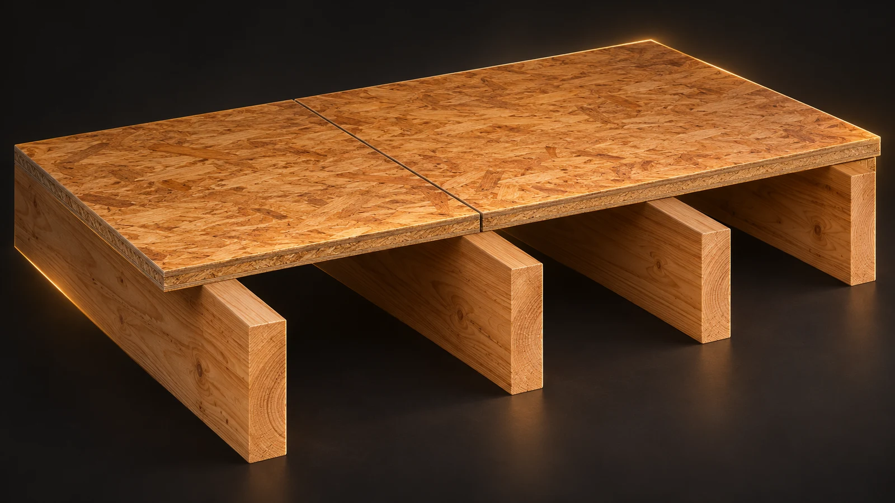
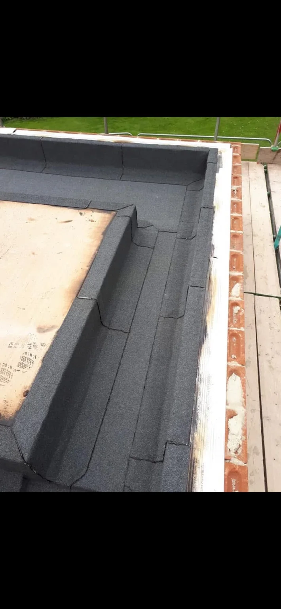

This lesson teaches what to look for and what to record before a built-up felt roofing project. It is a planning and awareness lesson, not a method statement or permission to work at height.
Learning goals
Recognise signs that a roof needs further investigation.
Understand the role of timber decks such as OSB3 and plywood.
Identify drainage and detailing questions.
Know when to stop and ask a competent person.
1. Inspect before specifying work
From a safe position, record visible evidence of ponding, cracked finishes, blistering, loose edges, blocked outlets, damaged flashings and previous repairs. Interior staining may indicate a leak, but its source can be some distance away. Photographs, measurements and notes help a competent surveyor assess the roof.
Do not walk onto a roof to investigate unless safe access, edge protection, fragile-surface controls and an appropriate assessment are in place. Never assume an old roof deck or rooflight will support your weight.
2. Understand the supporting deck
OSB3 and plywood are common engineered timber sheet materials, but a label alone does not prove a board is suitable for a particular roof. Structural span, board thickness, support, fixings, moisture, fire performance and the membrane manufacturer's approved build-up all matter.

Concept illustration only. Deck fixing patterns, thicknesses and spans must come from an appropriate design and approved system.

Submitted project photograph · perimeter detail for observation and discussion.
3. Moisture and compatibility
Moisture trapped within an existing roof can affect insulation, deck integrity and future waterproofing performance. A competent assessment may require opening-up investigations or specialist moisture testing. Do not simply cover an unknown wet or deteriorated build-up.
4. Drainage and roof details
Record the location and condition of outlets, gutters, upstands, rooflights, parapets, penetrations and adjoining walls. Falls and water discharge must be designed for the roof and its location. Poor detailing is a frequent source of water ingress.
5. Safety and fire planning
Before any practical work, the responsible team needs a suitable risk assessment and method statement, safe access and fall prevention, protection of fragile areas, weather controls, and an emergency plan. Torch-applied products introduce hot-work and fire hazards; the choice of application method and fire controls must be assessed by competent people.
Conceptual deck and support cutaway; not a structural design.User-supplied commercial roof photograph for observation and discussion.Rooflight observation: treat rooflights as potentially fragile.
Deck and moisture investigation
Distinguish surface condition from structural condition. Record existing roof build-up, signs of movement, moisture indications and previous repairs. Do not assume that visual inspection establishes loading capacity or concealed moisture; escalate uncertainty before specifying work.
Does a dry-looking deck prove it is suitable?
No. A competent assessment and the approved design are required.
Stop and review
Plan work at height using the hierarchy of controls. Avoid roof access where possible; use suitable collective protection and account for fragile surfaces, weather, access and emergency arrangements. If protection is incomplete, do not proceed.
Is a harness alone a complete safe system?
No; equipment, anchor arrangements, training, rescue and the risk assessment all matter.
Quality and handover
Agree inspection hold points before work begins. Record product identification, approved drawings, photographic evidence, changes and outstanding defects. Make inspection records useful to the next person, not just a folder of unexplained photographs.
Should an unexplained change be covered over?
No. Record it and seek approval before continuing.
Roof inspection and preparation — narrated visual recap
Original illustrated micro-lesson with synthetic English narration; not filmed installation footage.
Read transcript
Start with a planned inspection from safe access. Establish the deck type, condition and limitations before choosing a repair system.
Look for signs of moisture, movement and previous alterations. A competent person must investigate uncertainty about structural suitability.
Knowledge check: can a dry-looking surface prove that a roof assembly is dry? No. Inspection and appropriate investigation are required.